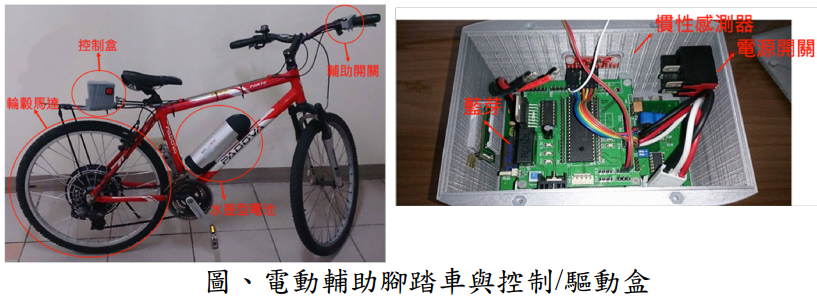
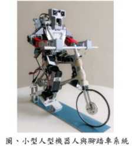
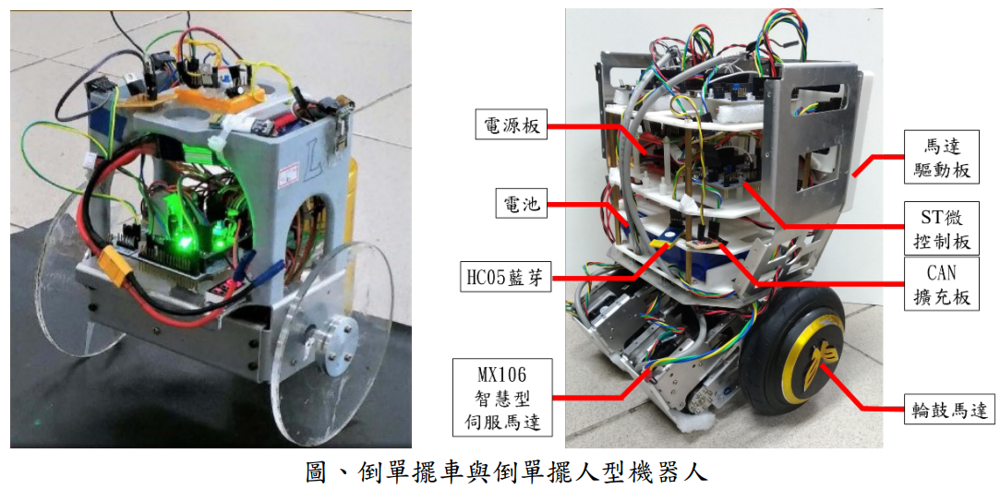
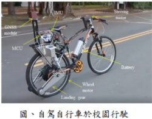

1. 螺旋式移動管線檢測機器人之設計、分析與控制
本研究研發一創新的螺旋式移動管線檢測機器人。螺旋式移動管線檢測機器人在結構上類似於差 動式輪型機器人加上一個可旋轉的支撐臂搭配主動式方向輪。差動式雙輪的架構使其可維持行進操縱 性與靈活度。在管路中進行檢測時，則是採用以支撐臂張開撐住管壁的螺旋前進模式。我們做了運動 學分析證明為達成穩定的螺旋運動，差動雙輪相對於管線的導程角與方向輪的轉向角須維持特定的關 係；我們也進行力學分析得到機器人穩定不墜落時支撐臂力矩的要求。實驗驗證了管線機器人螺旋運 動能在水平管道，傾斜管道和垂直管道順利移動。

2. 基於慣性感測器訊號融合之電動輔助腳踏車研究
研發的電動輔助腳踏車以日漸普遍的微機電六軸慣性感測器取代昂貴的扭力感測器作為電動輔 助的依據。與扭力感測器相較，慣性感測器可直接固定於車體上，無需更改車體機構。在配置慣性感 測器融合演算法與馬達控制器下，電動輔助腳踏車可達成坡度補償，慣性補償與阻力補償。
3. 具重心自適應控制之機器人騎腳踏車系統
在本研究中，我們建立了一人型機器人與等同大小的腳踏車。此人型機器人被設計來踩踏、平衡 與駕駛此腳踏車。我們特別專注於設計控制系統使機器人能藉由操控把手來平衡與駕駛腳踏車。我們 所提出的控制系統具有估測重心的能力，因之可在未知重心位置下達到平衡的性能。此控制系統是基 於一廣用的控制架構，此控制架構能在未知量測偏差的狀況下達到漸近穩定的控制效能。我們也發展 了一系統化的程序來設計相關的控制參數。我們以模擬與實驗驗證控制系統能達到重心自適應的性 能，特別是在重心不平衡下，使機器人控制腳踏車沿直線行駛。
4. 倒單擺機器人之強健防滑控制
本研究致力發展用於倒單擺機器人的防滑平衡控制器以使能應用於不同的地面狀況。該控制器的 設計是基於一個可以描述倒單擺動態與車輪打滑現象的泛用模型。因此模型可以分解為四個線性系統 的凸組合，我們以理論證明可用四個線性全狀態回授控制的凸組合來使系統對車輪打滑具備強健穩定性。
5. 自行車之強健平衡控制與自動駕駛研究
本研究建立了自行車的強健平衡控制與自動駕駛技術，使其能在室外環境實現自我平衡、即時定 位與路徑追蹤。在學理創新上，論文首創自行車平衡控制法則與路徑追蹤控制方法，並嚴謹地證明其 收斂性與對操作條件變異的強健性。在實務貢獻方面，除改裝先有的自行車使其具備電動驅動、電動 轉向與相關控制運算能力外；也整合 GPS、陀螺儀、加速規等感測裝置進行訊號融合運算，使能精準 地估測出車體的姿態與定位資訊提供控制使用。整合後的自行車系統已於清大校園進行實證，所累積數十公里的里程驗證了其功能性與強健性。